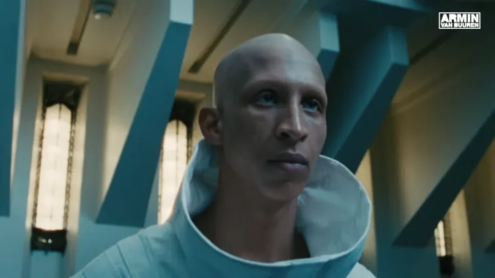
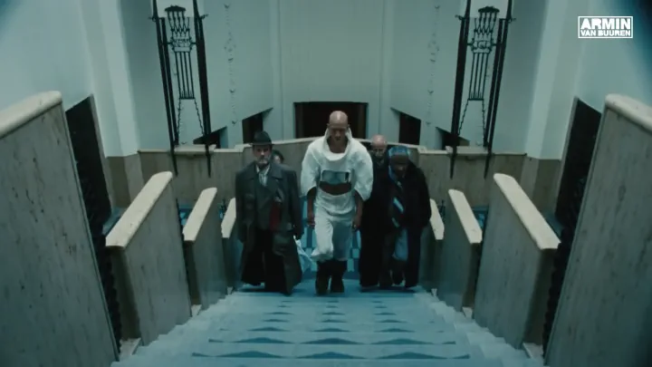
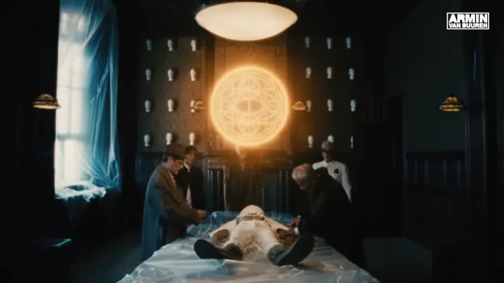
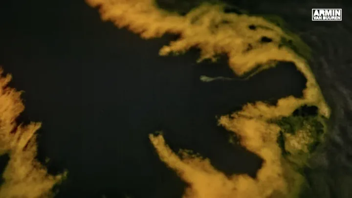
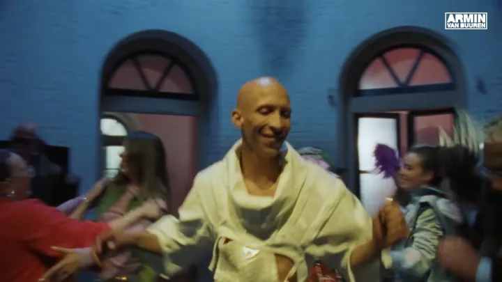
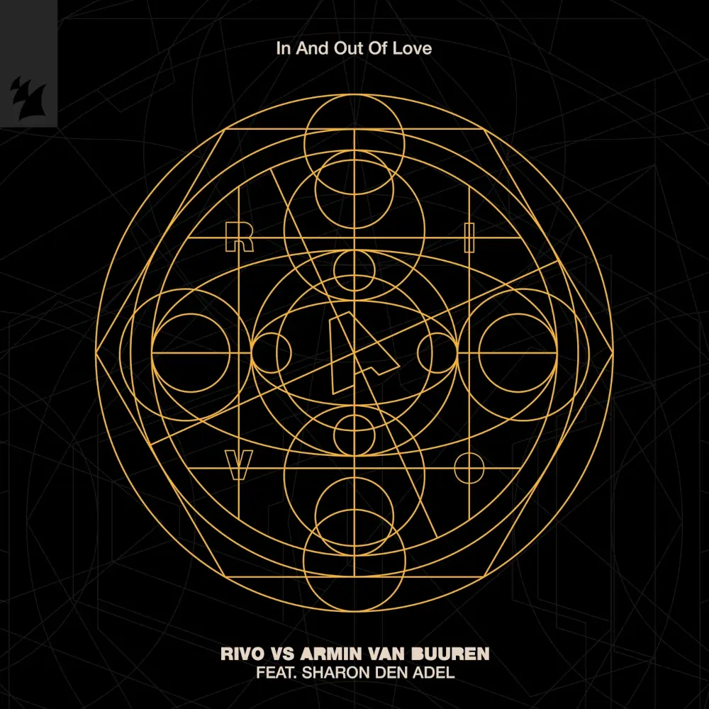

In And Out Of Love è un singolo di Rivo rilasciato a Luglio 2024 in collaborazione con Armin van Buuren.
Il brano riprende l'omonimo classico del 2008 di Armin van Buuren ma con le sonorità Afro House e Deep House che hanno caratterizzato l'estate del 2024, ed è stato accolto molto bene sia dal pubblico che dalla critica, che lo ha definito "qualcosa di unico, un momento di vera magia, uno dei pochi remix che superano l'originale", apprezzando particolarmente la voce della cantante Sharon den Adel.
Rivo ha realizzato anche un videoclip per il singolo, cosa piuttosto rara di questi tempi. A differenza dell'originale del 2008, che metteva in risalto la cantante e Van Buuren, il video di questa versione è stato definito "uno dei più inquietanti e surreali nella storia della musica elettronica".
Un uomo misterioso dalle sembianze quasi aliene viene scortato da alcuni uomini in una sala dove viene disteso su un tavolo, analizzato, intubato, e succede qualcosa che lo cambia per sempre.
Rinnovato, l'uomo si aggira per le vie di un borgo, dove delle persone vestite in modo carnevalesco lo osservano dai vicoli e dalle finestre delle case.
Un'altra persona viene brevemente distesa sul tavolo e infine la visuale si sposta in una stanza luminosa e colorata dove l'uomo misterioso balla assieme alle persone del borgo e al secondo soggetto. In alcuni istanti però si intravede l'uomo che balla da solo in quella stanza, spoglia e decrepita, indicando che probabilmente è tutto un'allucinazione o un sogno.
Il video è una produzione a budget medio-alto, realizzato da 10/10 - Creative Film and Photography e diretto da Sabrina Nijenhuis. In particolare è interessante il fatto che è stato girato su pellicola, dandogli un'atmosfera più surreale e artistica. L'assenza di sponsor è stata inoltre molto apprezzata dai fan.





Clicca sulla copertina del singolo per ascoltarlo su YouTube
